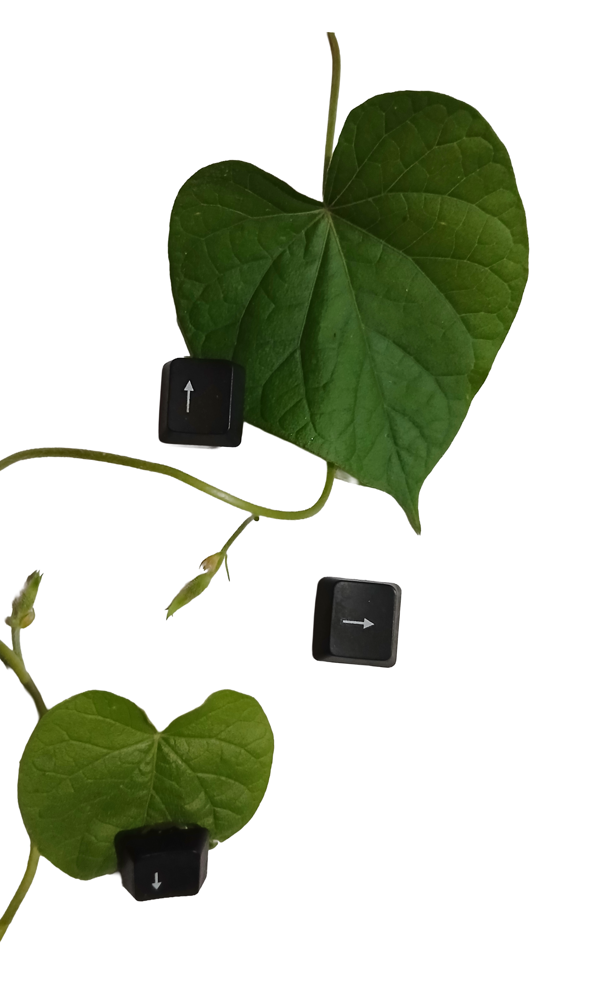
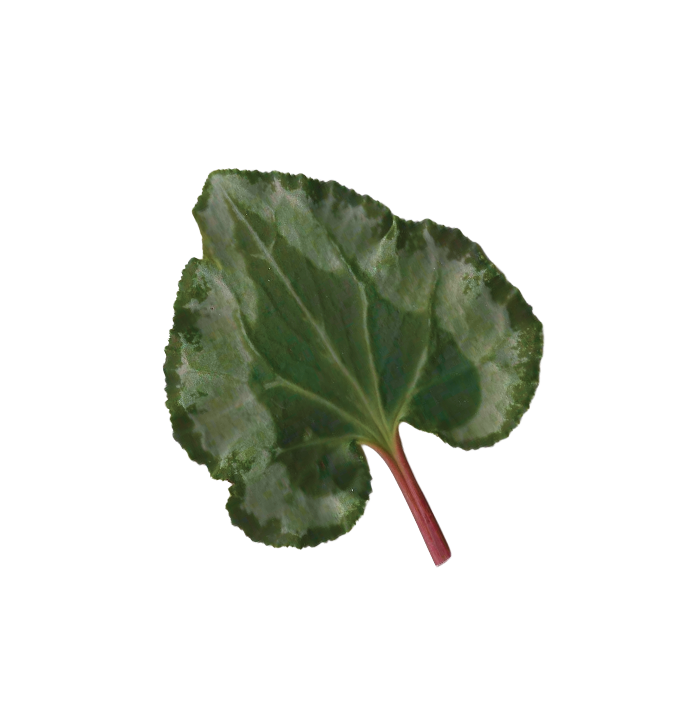

Actualmente estoy en el último año de mi formación en Desarrollo de Software. A su vez tengo gran interés en el Diseño Gráfico.
Me gusta trabajar de forma independiente, experimentar con estilos y aprender a través de la práctica.
Tengo experiencia enseñando programación a niños y trabajando de forma freelance, lo que me ayudó a desarrollar paciencia, organización y atención al detalle.
Hoy estoy enfocada en mejorar tanto mis habilidades técnicas como mi criterio visual, buscando integrar ambos en proyectos propios.
